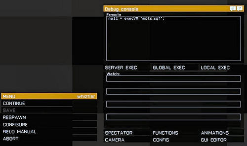

Client & Server Information
Add-ons and requirements
Client
Wolfpack does not require any add-ons to function (version. 1.63).
Required add-ons
- None
Optional/Recommended add-ons
- CBA A3 - Community Based Addons
- Advanced Combat Radio Environment (ACRE 2) -or- Taskforce Arrowhead Radio (TFAR)
- Commanders Tablet (cTAB)
- Advanced Combat Environment 3 (ACE3). Note tat AGM is no longer supported
PlayWithSix Wolfpack repo collection:
- Weblink: https://play.withsix.com/arma-3/collections/-ms0s9NY70qxMNWI7-ONBg/Wolfpack-(Official)
- PWS Direct import: pws://?c=-ms0s9NY70qxMNWI7-ONBg
Note that in the PlayWithSix Wolfpack collection no add-ons are ticked as required. All add-ons can be ticked (activated) if needed.
Server
Recommend server settings for optimal gameplay
| Difficulty | Expert |
| Map | Altis (Vanilla) |
| Style | COOP |
| Slots | 15 (14 players + 1 optional Headless Client) |
| Duration | 1-4 hours depending on style of gameplay |
| Add-ons | Server required add-ons: None (Recommended: CBA A3, ACRE 2/TFAR, cTAB, ACE3) |
Wolfpack missions have been tested (to work with) with the optional AI behavior mods ASR AI and TPW CAS.
Installing
Multiplayer / Dedicated Server
Copy/Move the .pbo files (in case you download the ZIP) to your Steam/SteamApps/common/ArmA 3/MPMissions folder.
Single player
All missions (incl the bootcamp training missions) can be played in single player mode:
- Copy/Move the .pbo files location in the 'Missions' folder (in case you download the ZIP) to your Steam/SteamApps/common/ArmA 3/MPMissions folder.
- Start Arma3
- Select Play
- Select Multiplayer
- Click on 'NEW'
- Select LAN as host, click 'OK'
- Select the Wolfpack mission you want to play
- Done!
TESTING
Each mission has its own 'Mission Objectives Test Script' to test mission critical triggers and exfil. The script works in a dedicated server environment and can be evoked by a server admin (or anyone who has server admin access).
- Wait at least 2 minutes before starting the script;
- Head out towards the RV first and/or leave the vehicle before starting the script;
- Make sure you are logged in as server admin
- Hit the escape key to bring up the 'debug console';
- in the execute window enter: null = execVM "mots.sqf;"